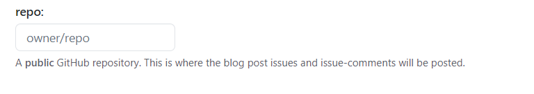
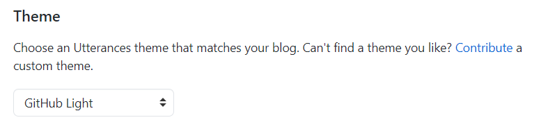
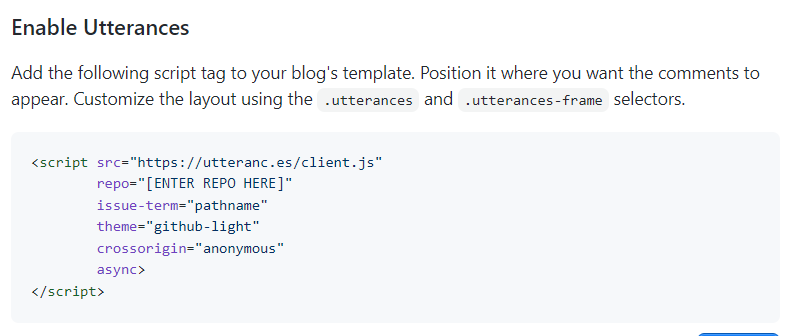
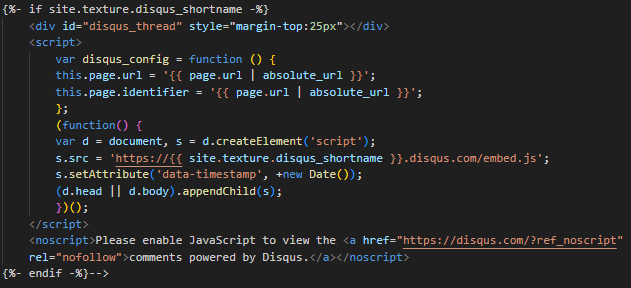
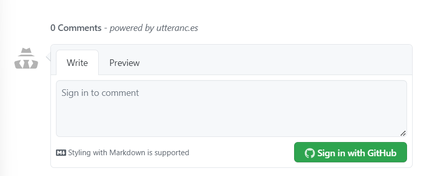

깃허브 포스트에 utterances를 사용해 댓글창을 추가하는 과정을 포스팅했다.
1. 깃허브에 Utterances App 설치하기
- Utterances GitHub App페이지로 이동하여 github 저장소에 Utterances를 설치한다.
2. Utterances 사이트에서 원하는 설정 하기
-
Utterances웹사이트로 이동한다.
-
repo: 칸에 owner/repo를 입력한다. 
-
Theme목록중에서 원하는 테마를 선택한다. 
3. 코드에 적용하기
-
script코드를 복사해서 _layouts의 post.html에 적용한다. 
-
post.html에 다음과 같이 disqus설정 코드가 있다면 제거 또는 주석처리 하고 그 자리에 script 코드를 적용한다. 
-
블로그에 댓글창이 생긴것을 확인할 수 있다. 